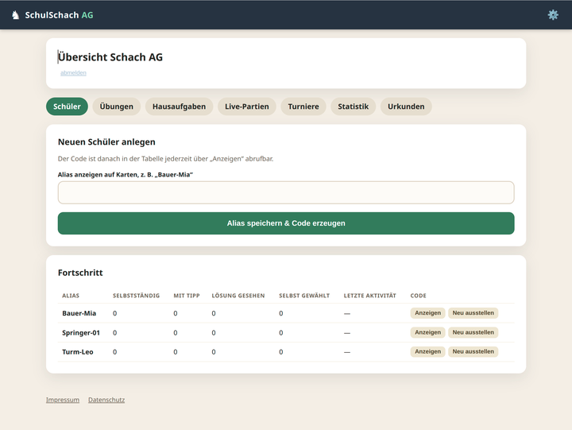
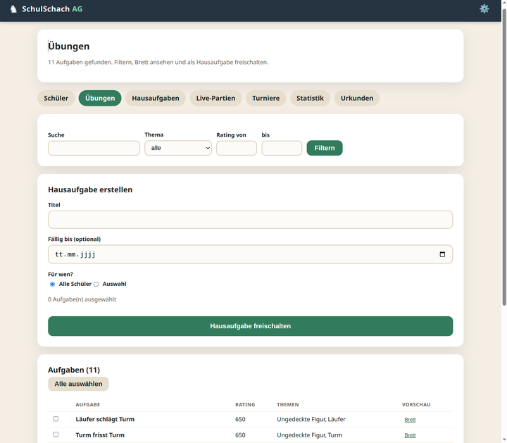
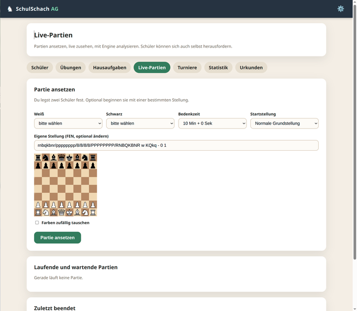
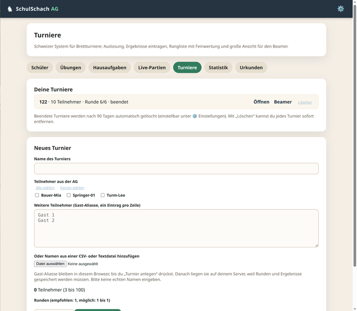

Alles, was eine AG braucht
Ein Login für Schülerinnen und Schüler mit persönlichem Code, ein Bereich für den Trainer – und ansonsten nur Schach.
Anmeldung mit Code
Jedes Kind bekommt einen zehnstelligen Code statt eines Passworts. Keine E-Mail, kein Klarname, kein Passwort-Reset.
Lernpfade & Aufgaben
Modulierter Lernpfad mit Taktik, Matt, Endspiel – aufgebaut aus gefilterten Aufgaben der Lichess Open Database (CC0).
Hausaufgaben & Statistik
Aufgaben freischalten, Fälligkeit setzen, Fortschritt je Thema sehen – inklusive Schwachstellen der Klasse.
Live-Partien
Mit Schachuhr gegeneinander oder gegen die Klasse: ansetten, live zusehen, danach mit Engine-Analyse die Patzer finden.
Turniere
Schweizer System nach FIDE-Holländisch, Auslosung, Rangliste mit Buchholz – und große Beamer-Ansicht für den Raum.
Medaillen & Urkunden
Digitale Belohnungen für Fleiß; Urkunden als SVG, deren Name nur im Browser steht und nie an den Server geht.
Einblicke
Vier Bildschirme aus dem Trainerbereich – mehr zeigt die Demo-Galerie in der README.




Datenschutz ist hier kein Feature, sondern das Design
Gebaut für eine Schul-AG, in der möglichst wenig personenbezogenes anfällt.
- Nur Alias und Code – Klarnamen existieren im System schlicht nicht.
- Kein Chat, keine Tracker, keine externen Schriften oder CDNs, keine Cookies von Dritten.
- Trainingdaten bleiben auf dem eigenen Server; die Engine rechnet im Browser.
- Sitzungen laufen nach 2 Stunden ab, der Trainer-Login sperrt nach fünf Fehlversuchen.
- Codes mit scrypt gehasht, Schülercodes zusätzlich AES-256-GCM verschlüsselt.
- Nächtliche Datenbank-Sicherungen mit 7/4/3 Ständen, Wiederherstellung getestet.
Loslegen
Zwei Wege: produktiv mit Portainer und Traefik oder in zwei Minuten lokal zum Ausprobieren.
🏆 Produktivbetrieb mit Portainer
Stack im Repository-Modus anlegen, Compose-Pfad compose.portainer.yml, Variablen setzen, deployen. Domain steckt in den Traefik-Labels der Datei.
Repository: github.com/TJRSchmidbauer/schulschach Branch: main Compose: compose.portainer.ymlAnleitung öffnen →
💻 Lokal ausprobieren
Reicht Docker, kein Reverse-Proxy nötig. Die Test-Codes erscheinen einmalig im Container-Log.
cp .env.example .env docker compose -f compose.local.yml up -d --build # → http://localhost:3000Anleitung öffnen →
Trainer-Code nie im Klartext speichern: npm run hash:trainer -- "DEIN_LANGER_CODE" erzeugt den Hash für die Stack-Variable.